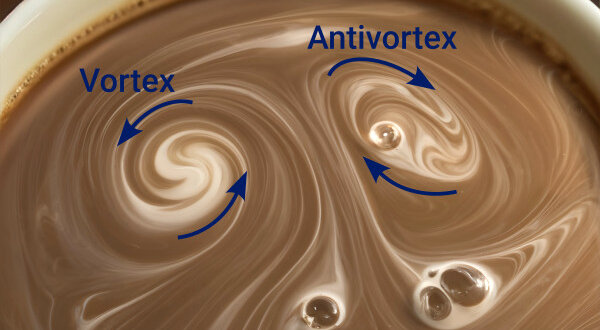
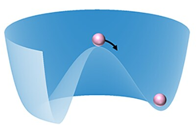
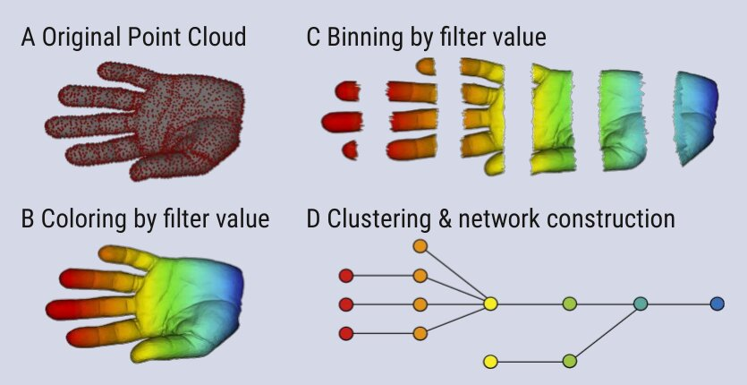

Science Communication
Articles
Jun 2024

Blog article, STRUCTURES Cluster of Excellence, Heidelberg University
Research highlights
Nov 2025

bwHPC (Baden-Württemberg high-performance computing) success story
Interviews
Feb 2024

Interview on topological data analysis and the “Math & Data” Exploratory Project, STRUCTURES Newsletter, Heidelberg University